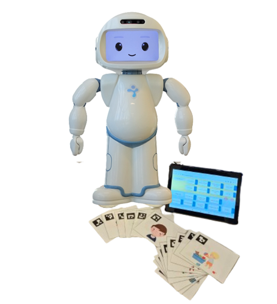

This project involves the design and development of a web-based game system embedded in a QT robot, used in speech-language therapy sessions for children with language impairments. The project is a collaboration with certified Speech-Language Pathologists (SLPs) and was conducted in real-world clinical environments.
Technologies used include Flask (backend), ROS (robot middleware), and HTML/CSS, Javascript (frontend). The robot responds with gestures and speech, reinforcing correct actions and encouraging continued participation.
📎 GitHub link: https://github.com/soominimini/QT_game_final